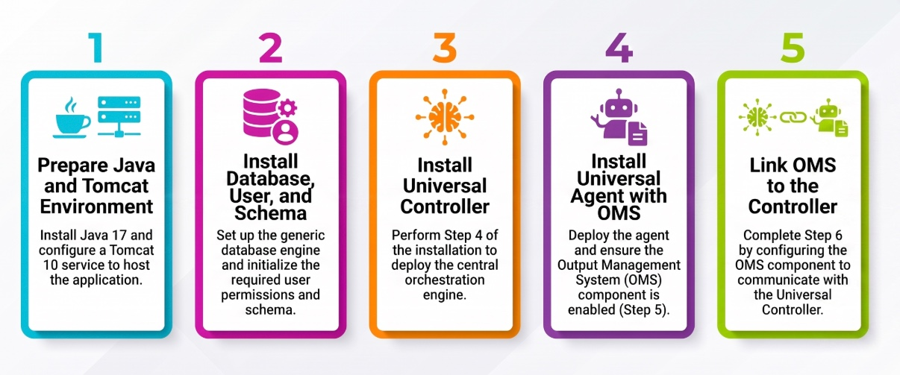

Stonebranch Installation Command Generator
This website helps you generate installation commands for Stonebranch Universal Agent and Controller components. Simply fill out the configuration forms to generate the appropriate installation commands for your environment.
Installation Overview

The five major phases of a Stonebranch UAC deployment: prepare the Java/Tomcat environment, set up the database, deploy the Universal Controller, install Universal Agent with OMS, then link OMS back to the Controller.
Available Tools
Environment Setup
Generate prerequisite installation scripts for Java, Tomcat, Database, and Agent dependencies.
Universal Controller
Generate installation commands for Universal Controller with database configuration.
Universal Agent
Generate installation commands for Universal Agent on Linux and Windows platforms.
Post Configuration
Reference for tasks to perform after installation. Includes a curated list of recommended Universal Controller properties (administrator email, banner color, change history, system identifier, web service response defaults, and more) with suggested values, an interactive SSL/TLS setup guide for Tomcat that generates the matching keytool/openssl commands and server.xml connector snippet for self-signed, CA-issued, PEM/PKCS12, or pre-built keystore certificates, and a UA Cert Configuration generator that builds the ucert commands plus the ubroker.conf/omss.conf/uags.conf/uacl.conf snippets to enforce certificate-based OMS-to-agent authentication.
Hardware Sizing Calculator
Calculate recommended hardware specifications based on your expected task volume and retention requirements.
Documentation Links
For detailed installation instructions and requirements, please refer to the official Stonebranch documentation:
-
Universal Controller Installation:
Installation and Applying Maintenance -
Universal Agent Installation:
Universal Agent Installation Information
How to Use
- Environment Setup (Optional): First, use the Environment tool to generate prerequisite installation scripts for Java, Tomcat, Database, or Agent dependencies
- Select Component: Choose the component you want to install (Controller, Agent Linux, or Agent Windows)
- Configure: Fill out the configuration form with your environment-specific values
- Generate: Click "Generate Command" to create the installation command
- Execute: Copy the generated command and run it on your target system